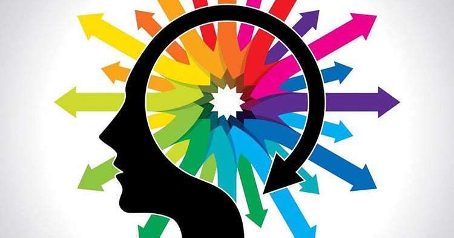

Quais os benefícios do jogo da memória?
Veja aqui!
Entenda os benefícios de investir no jogo da memória.
Você conhece os benefícios do jogo da memória?
Ainda não?
Pois saiba que essa atividade super simples é capaz de promover
muitos efeitos positivos para a sua mente e cérebro.
Veja aseguir, como isso é possível e saiba por que você deve
investir em um bom jogo da memória com os amigos.
Quais os benefícios do jogo da memória?
Os benefícios do jogo da memória estão envolvidos com questões
interpessoais e intrapessoais.
Abaixo você compreenderá melhor esses pontos:
1- Melhora a sua capacidade de foco e concentração quando estamos
jogando o jogo da memória, tendemos a manter o foco e a
concentração bem apurados para o que está acontecendo diante de
nossos olhos.
A nossa ideia é manter uma concentração profunda para que possamos
encontrar o par da nossa carta virada.
Dessa maneira, deixamos de lado as distrações e exercitamos esse
estado cerebral de “atenção plena”.
2- Trabalha a interação com outras pessoas Jogar com outras
pessoas pode ser muito satisfatório e prazeroso.
Isso porque estaremos estimulando a nossa comunicação
interpessoal, e ainda estaremos rindo e nos divertindo com os
outros.
 Logo, nos sentimos mais à vontade e fortalecemos laços sociais com
amigos e pessoas que amamos.
Logo, nos sentimos mais à vontade e fortalecemos laços sociais com
amigos e pessoas que amamos.
3- Desenvolve a sua inteligência espacial A sua inteligência
espacial, de certo modo, também passa a ser estimulada.
Afinal, você deverá recordar em qual parte da mesa determinada
figura está posicionada.
Isso melhora a sua visão geral do ambiente e o espaçamento entre
as cartas.
4- Estimula a sua memória Para os estudantes, o jogo da memória
promete estimular o que o seu próprio nome declara: a memória.
Até porque estaremos desenvolvendo nossa memória de trabalho, e
isso é muito importante na hora em que estamos lendo, escrevendo
ou aprendendo algo, uma vez que precisamos nos manter atento ao
raciocínio e a linha de conhecimento explorada nesse caso.
Se a nossa memória de trabalho falhar, não conseguiremos
raciocinar acerca de um texto e tampouco interpretá-lo.
Consequentemente não seremos capazes de absorver um novo
conhecimento, e isso impactará profundamente os nossos resultados
acadêmicos.
5- Aumenta a sua autoconfiança Você sabia que o jogo da memória
pode, ainda, melhorar a sua autoconfiança?
Incrível, não?
E sabe por que isso acontece?
A gente te explica! Basicamente, é necessário ter autoconfiança
enquanto se vira uma peça e procura o seu par.
Você crê que a sua memória está lhe direcionando ao caminho
certo.
Ou seja, você acredita que realmente sabe o que está fazendo. Por
isso, a sua autoconfiança começa a ser trabalhada.
Você
começa a ver que a sua capacidade de reconhecer os pares e lembrar
onde eles estão é bem apurada, e isso traz autoestima durante o
jogo, especialmente quando você acerta um par.